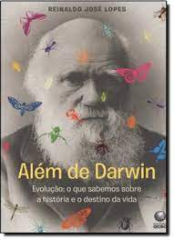

Inicio📍
Que esta sábado à noite seja o começo de um final de semana revigorante. Aproveite para relaxar, curtir e se preparar para momentos especiais. 🎉

Celebre suas conquistas da semana e prepare-se para criar novas histórias amanhã...
Tecnologia👨💻
Encerramento das Operações da X no Brasil

O recente anúncio do encerramento das operações da empresa X no Brasil gerou uma onda de reações no setor tecnológico. O Conselho Digital, uma associação que representa algumas das maiores empresas de tecnologia do mundo, incluindo Google, Meta, Amazon, TikTok, Discord, Hotmart, Kwai, 99 e Mercado Livre, expressou profundo lamento pela decisão.
A associação enfatizou seu compromisso com a liberdade de expressão e a segurança dos usuários, destacando que não tolera ataques à democracia ou aos direitos civis. A preocupação é que o precedente estabelecido por essa ação possa afetar negativamente a operação de outras empresas no país, prejudicando a economia e os cidadãos brasileiros.
O Conselho Digital espera que o episódio sirva de lição para que a razoabilidade e a proteção dos direitos prevaleçam no Brasil. A associação apela para que as decisões do poder público considerem o impacto a longo prazo sobre a inovação e a liberdade no ambiente digital.
Este acontecimento ressalta a importância do diálogo contínuo entre as empresas de tecnologia e os órgãos governamentais, visando garantir um ecossistema digital que seja tanto próspero quanto respeitoso com os direitos fundamentais dos usuários. A saída da X do mercado brasileiro não é apenas uma perda para a economia local, mas também um sinal de alerta para a necessidade de políticas públicas equilibradas que suportem o crescimento tecnológico e a liberdade de expressão.
Ciência🪐
A Intersecção entre Ciência e Vida: Uma Análise de "Além de Darwin"
"Além de Darwin", uma obra recente de César Benjamin, traz uma reflexão profunda sobre a relação intrínseca entre ciência e vida, explorando como o entendimento da vida evoluiu desde as teorias de Darwin. Com um talento redacional excepcional, Benjamin discorre sobre o método científico e como ele se aplica ao estudo da vida, abordando a evolução com uma perspectiva ampla e multidisciplinar.
O livro é descrito como um esforço de síntese das ciências naturais, proporcionando uma leitura recomendada para aqueles interessados em compreender os complexos mecanismos da vida. Benjamin, editor da Contraponto e doutor honoris causa pela Universidade Bicentenária de Aragua, utiliza uma economia de fórmulas matemáticas, tornando o conteúdo acessível a um público mais amplo.
A obra recebeu elogios de diversas personalidades do meio acadêmico, destacando-se pela amplitude de sua abordagem e pela capacidade de analisar a evolução sob diferentes ângulos. O livro também é notável por sua interpretação radicalmente multidisciplinar, sugerindo que o avanço na compreensão da vida não virá da unificação dos métodos científicos, mas sim de uma abertura das ciências para a filosofia e a história.
"Além de Darwin" não só reflete sobre a origem da vida à luz da teoria da evolução, mas também incorpora conhecimentos produzidos após Darwin, como a decifração do DNA e conceitos fora da biologia, como teoria da informação, entropia, causalidade e probabilidade. Este enfoque proporciona uma visão mais holística e integrada da ciência da vida, desafiando a cisão tradicional entre as ciências da natureza e as ciências da vida.
"Além de Darwin" é uma obra que contribui significativamente para o diálogo entre ciência e vida, oferecendo uma nova perspectiva sobre como entendemos a evolução e a complexidade da vida. É um livro que certamente enriquecerá o debate científico e filosófico, sendo uma leitura essencial para todos os interessados na intersecção entre estas duas esferas fundamentais do conhecimento humano.
Educação📚
Avanços Notáveis no Ensino de Matemática em Escolas Estaduais

Recentemente, duas escolas estaduais brasileiras alcançaram marcos notáveis no ensino de Matemática, superando barreiras históricas de desempenho e estabelecendo novos padrões de excelência educacional. O Colégio Estadual Professora Gomes da Fonseca, localizado em Formosa (GO), e a Escola Família Agrícola Padre Eliésio dos Santos, em Ipueiras (CE), ambas situadas em zonas rurais, conseguiram ultrapassar a marca dos 400 pontos no Sistema de Avaliação da Educação Básica (Saeb), um feito inédito para unidades educacionais de redes estaduais.
A Escola Família Agrícola Padre Eliésio dos Santos não só atingiu 411,84 pontos, alcançando o nível 8 da prova, mas também se destacou com o maior Índice de Desenvolvimento da Educação Básica (Ideb) no ensino médio do país. Por outro lado, o Colégio Estadual Professora Gomes da Fonseca superou ainda mais essa marca, com 425,69 pontos, chegando ao nível 9. Esses resultados são um testemunho do potencial dos alunos e da qualidade do ensino oferecido, refletindo um avanço significativo na educação matemática.
Ambas as instituições compartilham a característica de atenderem principalmente filhos de agricultores da região, mas diferem em seus formatos educacionais. A escola de Formosa, inaugurada em 2020 e temporariamente fechada devido à pandemia, atende a 108 estudantes e emprega métodos de avaliação desenvolvidos pelo Centro de Políticas Públicas e Avaliação da Educação (Caed) da Universidade Federal de Juiz de Fora (UFJF). Essa abordagem permite uma compreensão detalhada das necessidades de aprendizado de cada aluno, possibilitando um ensino mais personalizado e eficaz.
A diretora da escola, Isabel Tharyne, atribui o sucesso aos processos de avaliação contínua que identificam as lacunas de aprendizagem dos alunos e às políticas de formação de professores que promovem a colaboração e o apoio mútuo entre os docentes. Além disso, a escola utiliza estratégias como atividades lúdicas e o uso de mídias sociais para engajar os alunos e aproximar a comunidade escolar.
Por sua vez, a Escola Família Agrícola Padre Eliésio dos Santos opera sob o modelo de pedagogia da alternância, onde os estudantes dividem seu tempo entre períodos de estudo intensivo na escola e atividades em casa, com acompanhamento remoto dos professores. Esse método é reconhecido e regulamentado pelo Ministério da Educação (MEC) para a educação do campo e tem se mostrado eficaz no desenvolvimento educacional dos alunos.
Esses avanços no ensino de Matemática nas escolas estaduais são um reflexo do compromisso com a educação de qualidade e da capacidade de adaptação e inovação diante dos desafios contemporâneos. Eles servem como inspiração para outras instituições educacionais e como um lembrete do impacto positivo que um ensino focado e bem estruturado pode ter no futuro dos estudantes e da sociedade como um todo.
Economia💰
Megainvestidores Antecipam Queda das Big Techs e Reduzem Participações
Em um movimento estratégico, megainvestidores como George Soros e Stanley Druckenmiller venderam ações de grandes empresas de tecnologia, conhecidas como as "Sete Magníficas", antes da significativa queda de seus papéis em julho de 2024. Essa decisão reflete uma análise cuidadosa do mercado e uma tentativa de mitigar perdas em um cenário econômico que se tornava mais desafiador.
- Vendas Estratégicas: A Soros Fund Management vendeu aproximadamente US$ 58 milhões em ações da Alphabet (controladora do Google) e cerca de US$ 15 milhões da Amazon. A Duquesne Family Office de Druckenmiller também reduziu sua participação na Nvidia, vendendo mais de 1,5 milhão de ações.
- Outros Investidores: A Appaloosa Management, de David Tepper, cortou sua exposição à Amazon, Microsoft e Meta, enquanto a Wildcat Capital Management vendeu toda sua posição na Meta, totalizando US$ 24 milhões em ações.
- Desempenho do Mercado: As ações das "Sete Magníficas" haviam experimentado um rali significativo, mas o índice Nasdaq 100 recuou 14% nas quatro semanas a partir de 10 de julho, indicando uma reversão no otimismo do mercado.
- Análise Crítica: Druckenmiller, em uma entrevista à CNBC, expressou preocupações sobre a supervalorização do "boom" da inteligência artificial, sugerindo que as expectativas podem estar exageradas a curto prazo.
- Divulgação de Participações: Fundos com mais de US$ 100 milhões devem divulgar suas participações trimestralmente, mas as informações podem não refletir a totalidade das posições, já que muitos derivativos e posições vendidas não são incluídos.
A antecipação de uma desaceleração nas ações das grandes empresas de tecnologia levou megainvestidores a venderem suas participações antes da queda significativa em julho de 2024. A estratégia de venda de ações por investidores como George Soros e Stanley Druckenmiller demonstra uma abordagem proativa em um ambiente de mercado volátil, refletindo preocupações sobre a sustentabilidade do crescimento impulsionado pela inteligência artificial e as condições econômicas mais amplas. Essa movimentação ressalta a importância da análise de mercado e da gestão de riscos em investimentos de grande escala.
SAÚDE🧬
Minas Gerais Emite Alerta de Saúde Após Caso de Sarampo
A Secretaria de Estado de Saúde de Minas Gerais emitiu um alerta para os profissionais de saúde após a confirmação de um caso de sarampo em um paciente de 33 anos na cidade de Belo Horizonte. O alerta visa intensificar a vigilância epidemiológica e a vacinação contra a doença.
- Caso Confirmado: O paciente, que não estava vacinado, apresentou sintomas como febre, tosse e manchas vermelhas no corpo. A confirmação do sarampo foi feita por meio de exames laboratoriais.
- Ação da Secretaria: Em resposta ao caso, a Secretaria de Saúde orientou as unidades de saúde a ficarem atentas a novos casos suspeitos e a intensificarem as campanhas de vacinação, especialmente entre crianças e adultos que não completaram o esquema vacinal.
- Importância da Vacinação: O sarampo é uma doença altamente contagiosa, e a vacinação é a principal forma de prevenção. A Secretaria ressaltou que a cobertura vacinal deve ser mantida em níveis adequados para evitar surtos.
- Histórico de Surtos: Minas Gerais já enfrentou surtos de sarampo nos últimos anos, e a confirmação deste novo caso reacende preocupações sobre a possibilidade de um novo surto na região.
Minas Gerais está em alerta após a confirmação de um caso de sarampo em Belo Horizonte, levando a Secretaria de Saúde a reforçar a vigilância e as campanhas de vacinação. O paciente, não vacinado, apresentou sintomas clássicos da doença, destacando a importância da imunização para prevenir surtos. A situação é um lembrete da necessidade de manter altas taxas de vacinação para proteger a população contra doenças contagiosas como o sarampo.
Últimas Notícias⚠️
Morte de Silvio Santos, Ícone da TV Brasileira

Silvio Santos, um dos maiores nomes da televisão brasileira, faleceu aos 93 anos em São Paulo. Ele foi o criador e apresentador do icônico "Programa Silvio Santos" desde 1963 e fundador do Sistema Brasileiro de Televisão (SBT), que entrou no ar em 1981.
- Silvio Santos, cujo nome de batismo era Senor Abravanel, nasceu no Rio de Janeiro em 1930, filho de imigrantes judeus. Ele começou sua carreira como locutor de rádio e vendedor ambulante antes de entrar para a televisão.
- Seu programa de variedades, que chegava a durar mais de 10 horas, era marcado por quadros inesquecíveis como "Domingo no parque", "Qual é a música", "Show de calouros" e "Porta da esperança". Seu carisma e bordões como "Vem pra cá, vem pra cá" e "Quem quer dinheiro?" conquistaram o público.
- Além da TV, Silvio Santos também fez sucesso cantando marchinhas de carnaval, como "Coração Corintiano" e "A pipa do vovô", gravadas em álbuns entre as décadas de 70 e 90
- Em 2024, ele foi internado duas vezes no Hospital Albert Einstein em São Paulo, a primeira para se recuperar de H1N1 e a segunda para exames de imagem. Sua morte ocorreu neste sábado, 17 de agosto de 2024
A morte de Silvio Santos, aos 93 anos, marca o fim de uma era na televisão brasileira. Sua trajetória, desde os tempos de locutor de rádio e vendedor ambulante até se tornar um dos maiores comunicadores do país, é uma inspiração. Silvio deixa um legado de entretenimento e inovação com seu programa de variedades e a criação do SBT. Sua personalidade carismática e marcante conquistou gerações de telespectadores e o consolidou como um ícone inesquecível da TV nacional.
Extra✨
Sábado à noite é o momento perfeito para aproveitar ao máximo o final de semana. Aqui estão algumas sugestões para tornar sua noite ainda mais especial:
- Explore novos lugares 🌆: Saia da rotina e visite um novo restaurante, café, ou ponto turístico na sua cidade.
- Organize um encontro social 🥳: Convide amigos ou familiares para uma reunião em casa ou para sair. Sábado à noite é ideal para se conectar e criar boas memórias.
- Desfrute de entretenimento 🎭: Assista a um show, peça de teatro, ou participe de um evento local. Aproveite o que sua cidade tem a oferecer.
- Relaxe em casa 🏠: Se preferir uma noite tranquila, prepare um jantar especial, assista a um bom filme, ou simplesmente relaxe com um bom livro.
- Cuide de si mesmo 🧖♀️: Tire um tempo para praticar autocuidado. Um banho relaxante, uma máscara facial, ou uma sessão de meditação podem fazer maravilhas.